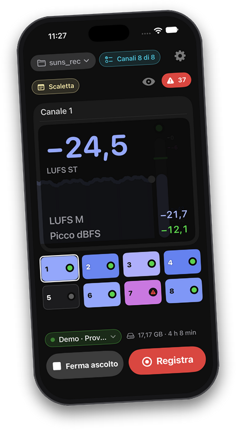
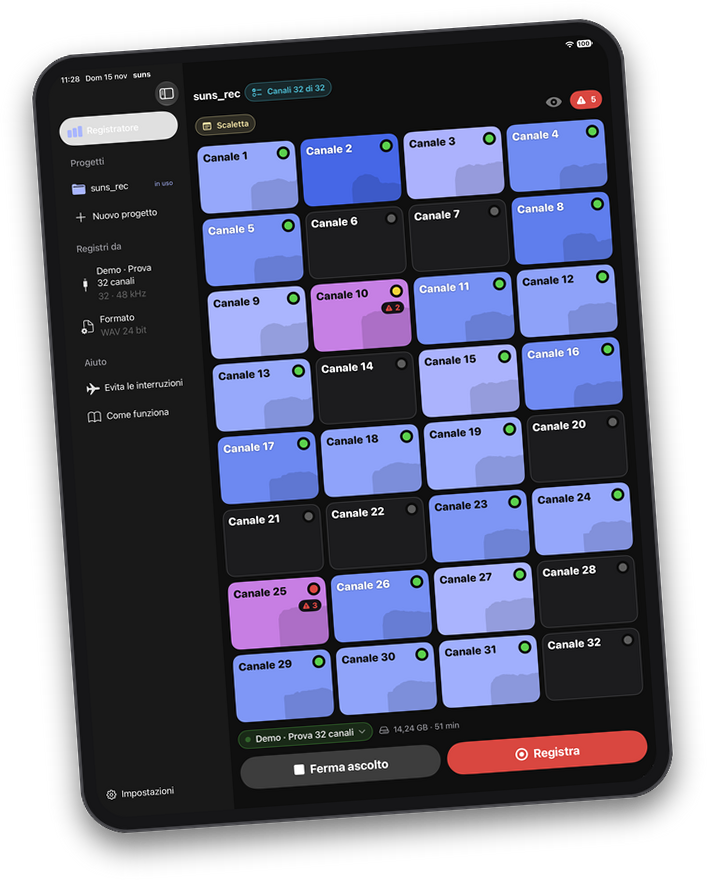
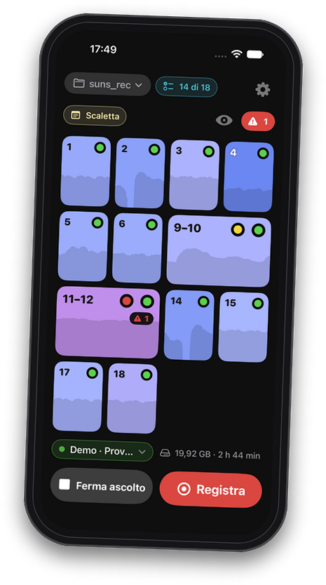
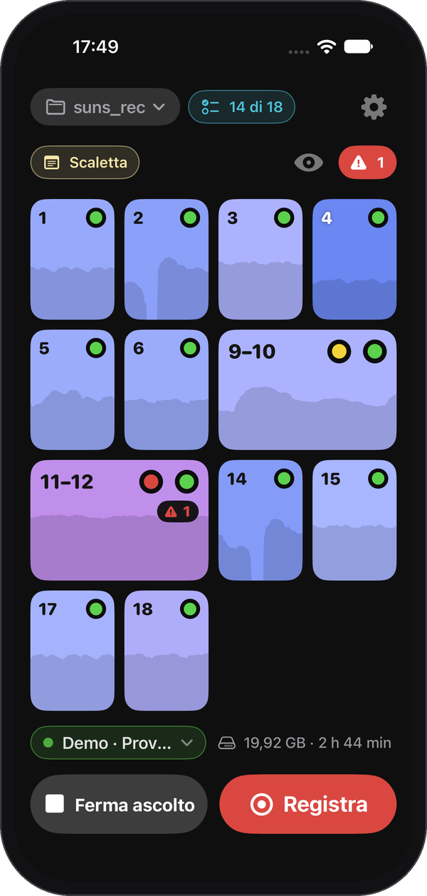
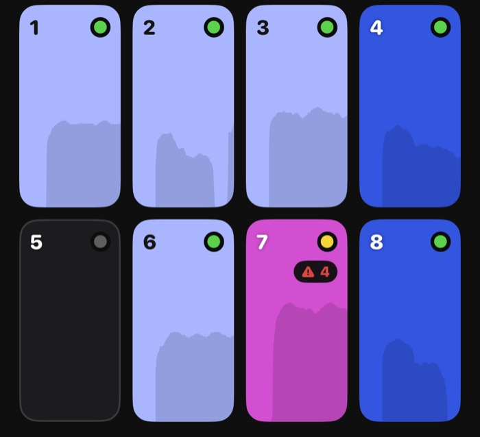
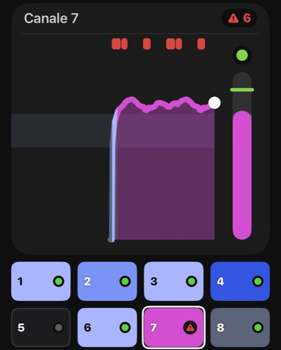

Hai già un registratore multitraccia in tasca.
Collega un mixer o una scheda audio USB al tuo dispositivo e premi Registra: ogni canale finisce nel suo file. Fino a 48 canali, su iPhone, iPad e Mac.





01due scene, la stessa app
al banco
Sei al mixer. Attacchi il cavo USB al tuo dispositivo e vedi tutti i canali, uno per uno. Ti porti a casa il multitraccia dell'evento, non si sa mai.
nello zaino
Una schedina USB a due ingressi, due microfoni, le cuffie. Niente computer, niente presa di corrente. Premi Registra e torni a casa con due tracce pulite, pronte da montare.
È la stessa app. Cambia solo quello che ci attacchi.
02due cose da guardare
Ci sono tanti modi di vedere l'audio: scale diverse, forme d'onda, analizzatori. Tutti utili, per chi li sa leggere.
Ma mentre registri ti servono soprattutto due cose: quanto suona forte e se ha clippato.
suns è fatta per farti vedere esattamente queste due.
- Il colore del canale è la loudness: quanto suona forte, più o meno come lo sente l'orecchio.
- Un triangolo rosso ti indica che il segnale è andato fuori scala, e conta quante volte.
Volume a posto e nessun triangolo rosso: stai portando a casa una registrazione da post-produrre. Il resto si fa dopo.

03più spazio hai, più vedi
suns è fatto per farti vedere sempre tutti i canali che registri, così ti accorgi subito se c'è un problema.
Le informazioni sono sempre le stesse. Ma, a seconda dello spazio sullo schermo, ogni canale cresce e ti racconta di più:



ok, bello, ma voglio saperne di più
il picco e il clip
Il picco (in dBFS) è il valore massimo raggiunto dal segnale audio. Come nei mixer, si usano tre colori (verde, giallo, rosso) per aiutarti a visualizzare il valore. Nell'app puoi scegliere la scala su cui sei abituato a lavorare.
Il clip invece non si discute: è quando il segnale tocca 0 dBFS, e il segnale è rovinato.
Il triangolo da grigio diventa rosso, con il numero di eventi (un tocco lo azzera).
la loudness e i colori: continua o target
La loudness (in LUFS) dice quanto forte suona un canale, in modo più vicino a come lo sente l'orecchio umano.
Quando registri non esiste un valore magico da raggiungere: dipende da cosa fai, e una voce in studio non è un concerto dal mixer. Quindi di partenza il colore non ti dice "bene" o "male".
Modo Continua (di partenza): dal blu (piano) al magenta (forte), in un'unica sfumatura; distingue il silenzio dal rumore di fondo.
Se invece hai un obiettivo preciso, passa al modo Target: scegli una fascia di volume, oppure lascia che suns la tari sulla tua voce in 10 secondi, e il colore ti dice se la stai seguendo.
Blu sotto il target, lilla dentro, magenta sopra. Usa i preset che trovi nell'app o crea la tua fascia.
voglio tutte le informazioni possibili
Al grafico e alle mattonelle puoi sovrapporre i numeri, a seconda dello spazio disponibile: la loudness a breve termine (LUFS ST) in grande, sotto la loudness momentanea (LUFS M) e il picco in dBFS.
Con la vista Fonico, inoltre, il LED è sostituito da un meter di picco vero e proprio, e puoi aggiungere la scala graduata.
parentesi tecnica: solo per appassionati di misure
Per chi vuole sapere con che metro misuriamo. Se non ti interessa, puoi saltare tutto.
la loudness
Misurata con lo standard ITU-R BS.1770, con il filtro K che pesa le frequenze come le sente l'orecchio. "M" è la misura su una finestra di 400 ms, "ST" su 3 s. L'unità è il LUFS.
il picco
Tre scale per il LED: Semplice (la nostra), EBU e SMPTE, quelle dei broadcaster. Il clip è sempre 0 dBFS, qualunque scala scegli.
i file
WAV, ALAC e AAC. Puoi scegliere fra la massima affidabilità del WAV, la codifica compressa ma senza perdite dell'ALAC e l'ottima compressione dell'AAC, per ridurre al minimo lo spazio occupato.
i canali
Da 1 a 48, da qualunque scheda o mixer USB class compliant (in pratica quelli che vanno senza driver, molto frequenti). Un'unica app per iPhone, iPad e Mac.
04se qualcosa va storto, lo sai subito
Non posso prometterti che non succederà mai niente. Posso dirti che la maggior parte del tempo l'ho passata a rendere affidabile la registrazione. E se qualcosa va storto, non lo scopri a casa: lo sai subito.
- Se il dispositivo fa fatica a scrivere, te lo dice prima che si perda qualcosa. Se perde dei campioni, te lo dice subito.
- Se arrivano una telefonata o una sveglia, chiude i file e riparte da solo in una nuova ripresa (quelle non posso spegnerle io, ma nell'app ti spiego come evitarle).
- Con la memoria quasi piena si ferma da solo e salva la ripresa completa.
- Se stacchi il cavo USB durante la ripresa, i file restano leggibili.
- Ti avvisa quando la batteria si scarica.
- Registra anche a schermo bloccato.
Cosa non fa: non registra le telefonate (iOS non lo permette), non fa editing, non usa il Bluetooth come ingresso.
05come è nata
suns è nata da un'esigenza mia: volevo uno strumento portatile per piccole registrazioni multitraccia. Non lo trovavo, e così ho deciso di costruirmelo.
Poi, per curiosità, invece della schedina ci ho attaccato un mixer da live, per vedere fin dove reggeva. Con mio stupore anche un vecchio telefono registrava tranquillamente tutti i 32 canali di un X32. Da lì suns è cambiata: adesso è un attrezzo che mi porto in giro e attacco a qualunque mixer USB mi capiti davanti.
06entra nella beta
suns è in beta: funziona, la uso al lavoro, ma è ancora da rodare. Nella pagina della beta trovi come installarla, con cosa è stata provata e cosa ti chiedo in cambio.
Niente account, niente cloud: i file restano sul tuo dispositivo.